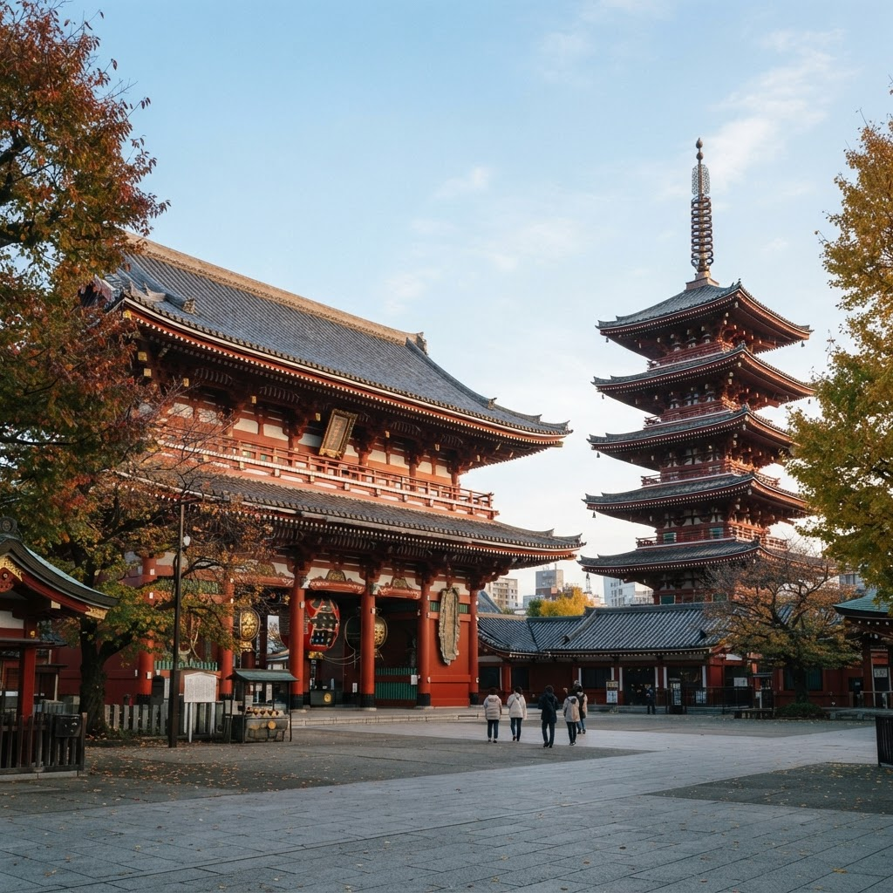

1 Group details
15:54
Tokyo, Japan
Nov 7–10, 2026
3 members · SHA, HKG, SIN
https://flights.cathaypacific.com/share/VFX37K
Friends can fly from different airportsJoining automatically accepts destination and dates.
What does your Tokyo look like?
Swipe through 4 food, scenery, culture and shopping ideas. Like what feels like you.
About 1 minute · Your picks aren't bookings, just preferencesPick itinerary preferences
2 Suggestion, not chosen
15:54
Tsukiji Outer Market
Tsukiji · Chuo City
Taste fresh seafood bowls and warm tamagoyaki as you wander Tokyo’s lively market lanes.
EST. BUDGET / PERSON¥2,000–3,500
DURATION · BEST TIME1–1.5 hrs · Morning
Go before 10am; some stalls are cash-only.
Swipe left to pass · Swipe right to like
← PassLike →
Next suggestion
3 Suggestion, liked
15:54
Food LIKED
LIKED
Tsukiji Outer Market
Tsukiji · Chuo City
Taste fresh seafood bowls and warm tamagoyaki as you wander Tokyo’s lively market lanes.
EST. BUDGET / PERSON¥2,000–3,500
DURATION · BEST TIME1–1.5 hrs · Morning
Go before 10am; some stalls are cash-only.
Swipe left to pass · Swipe right to like
← PassLike →
Next suggestion
Choice selected. Tap the other option to change it.
4 Last suggestion (Shopping)
15:54
 Shopping
ShoppingOmotesando stroll
Omotesando · Shibuya
Discover design-led boutiques, striking architecture and tucked-away cafés along leafy streets.
EST. BUDGET / PERSON¥1,000–3,000 café stop
DURATION · BEST TIME2 hrs · Afternoon
Shopping spend is extra; browsing is free.
Swipe left to pass · Swipe right to like
← PassLike →
Save preferences
4 of 4 chosen · 2 likes, 2 passes
5 Preferences saved
15:54
Preferences saved
Your Tokyo is taking shape, Clara.
4 suggestions reviewed · 2 liked · 2 passed
Your liked places

Tsukiji Outer MarketFood · ¥2,000–3,500 est.


Sensō-ji & AsakusaCulture · Free entry
Group readiness
3 of 3 readyGenerate Itinerary